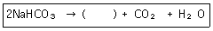
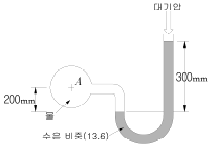
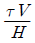
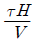
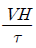
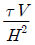
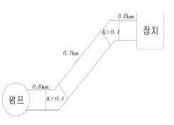
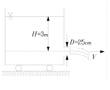
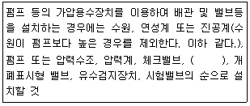
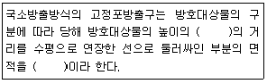

소방설비산업기사(기계) (2013-09-28 기출문제)
1과목: 소방원론
1. 전기화재를 일으키는 원인으로 볼 수 없는 것은?
- 정전기에 의한 스파크 발생
- 과부하에 의한 발열
- 절연도체 사용
- 배선의 단락
(정답률: 81%)

2. 건물 내 피난동선의 조건에 대한 설명으로 옳은 것은?
- 피난동선은 그 말단이 길수록 좋다.
- 피난동선의 한쪽은 막다른 통로와 연결되어 화재시 연소가 되지 않도록 하여야 한다.
- 2개 이상의 방향으로 피난할 수 있으며 그 말단은 화재로부터 안전한 장소이어야 한다.
- 모든 피난동선은 건물 중심부 한 곳으로 향해야 한다.
(정답률: 85%)
3. 질소를 불연성가스로 취급하는 이유는?
- 어떠한 물질과도 화합하지 않으므로
- 산소와 화합하나 흡열반응을 하기 때문에
- 산소와 산화반응을 하므로
- 산소와 같이 공기 성분으로 산소와 화합할 수 없기 때문에
(정답률: 70%)
4. 0℃의 물 1㎏을 화염면에 방사하였더니 물의 온도가 80℃가 되었다. 연소열에 의하여 물이 기화되지 않았다면 물이 흡수한 열량은 몇 kcal인가?
- 80
- 100
- 539
- 8000
(정답률: 52%)
5. 액화천연가스(LNG)의 주성분은?
- CH4
- H2
- C3H8
- C2H2
(정답률: 68%)
6. 할로겐화합물 소화약제가 아닌 것은?
- C2F4Br2
- C6H6
- CF3Br
- CF2ClBr
(정답률: 78%)
7. 위험물안전관리법령상 제2류 위험물인 가연성 고체에 해당하는 것은?
- 칼륨
- 나트륨
- 질산에스테르류
- 마그네슘
(정답률: 64%)
8. 다음 중 정전기의 축적을 방지하기 위한 가장 효과적인 조치는?
- 수분제거
- 저온유지
- 접지공사
- 고압유지
(정답률: 78%)
9. 내화건축물과 비교한 목조건축물의 일반적인 화재특성을 가장 옳게 나타낸 것은?
- 저온단기형
- 고온단기형
- 저온장기형
- 고온장기형
(정답률: 77%)
10. 다음 중 Halon 1301의 화학식에 포함되지 않는 원소는?
- 탄소
- 염소
- 불소
- 브롬
(정답률: 75%)
11. 제2종 분말소화약제의 주성분은?
- 탄산수소칼륨
- 탄산수소나트륨
- 제1인산암모늄
- 탄산수소칼륨+요소
(정답률: 75%)
12. 이산화탄소 소화약제의 장점이 아닌 것은?
- 소화 후 약제에 의한 오손이 없다.
- 장기간 저장이 가능하다.
- 겨울에는 동결되어도 가열하여 사용할 수 있다.
- 자체압력으로 방출이 가능하다.
(정답률: 73%)
13. 자신은 불연성 물질이지만 산소공급원 역할을 하는 물질은?
- 과산화나트륨
- 나트륨
- 트리니트로톨루엔
- 적린
(정답률: 65%)
14. 다음 중 발화온도가 가장 낮은 물질은?
- 이황화탄소
- 중유
- 휘발유
- 아세톤
(정답률: 49%)
15. 다음 중 연소할 수 있는 가연물로 볼 수 있는 것은?
- C
- N2
- Ar
- CO2
(정답률: 57%)
16. 메탄 80vol%, 에탄 15vol%, 프로판 5vol%인 혼합가스의 연소하한은 약 몇 vol%인가? (단, 메탄, 에탄, 프로판의 연소하한은 각각 5.0, 3.0, 2.1vol%이다.)
- 1.3
- 2.3
- 3.3
- 4.3
(정답률: 37%)
17. 다음은 분말소화약제의 열분해방정식이다. ( )안에 알맞는 것은?

- Na2CO3
- 2Na2CO3
- Na2CO2
- 2NaCO2
(정답률: 58%)
18. 다음 중 사염화탄소를 소화약제로 사용하지 않는 이유에 대한 설명으로 가장 옳은 것은 어느 것인가?
- 폭발의 위험성이 있기 때문에
- 유독가스의 발생 위험성이 있기 때문에
- 전기전도성이 있기 때문에
- 공기보다 비중이 작기 때문에
(정답률: 71%)
19. 다음 가스중 유독성이 커서 화재시 인명피해 위험성이 높은 가스는?
- N2
- O2
- CO
- H2
(정답률: 72%)
20. 가연물에 따른 연소형태를 틀리게 나타낸 것은?
- 목탄, 코크스 : 표면연소
- 목재, 면직물 : 분해연소
- TNT, 피크린산 : 자기연소
- 금속분, 플라스틱 : 증발연소
(정답률: 74%)
2과목: 소방유체역학
21. 곧은 원관 속의 흐름이 층류일 때에 대한 설명으로 올바른 것은?
- 전단응력이 벽면에서는 0이고 중심까지 직선적으로 변한다.
- 전단응력이 중심을 최고점으로 하는 포물선의 형태를 갖는다.
- 전단응력이 중심에서 0이고 중심으로부터 벽면까지 직선적으로 증가한다.
- 전단응력이 전단면에 걸쳐 일정하다. 전단 응력
(정답률: 53%)
22. 다음 그림에서 A점의 계기 압력은 약 몇 kPa인가?

- 0.38
- 38
- 0.42
- 42
(정답률: 56%)
23. 점성계수 μ의 차원은 어떤 것인가? (단, M은 질량, L은 길이, T는 시간이다.)
- ML-1T-1
- MLT
- M-2L-1T
- MLT2
(정답률: 63%)
24. 한 변의 길이가 10cm인 금속 정육면체가 대류에 의해 열을 외부공기로 방출한다. 이 금속 정육면체는 100W의 전기히터에 의해 내부에서 가열되고 있다. 정육면체 표면과 공기사이의 온도차가 50℃라면 공기와 정육면체 사이의 대류 열전달 계수는 몇 W/(m2℃)인가?
- 33.3
- 66.7
- 100
- 133.3
(정답률: 39%)
25. 두개의 큰 수평 평판 사이에 유체가 채워져 있다. 아래평판을 고정하고 윗 평판을 V의 일정한속도로 움직일 때 평판에는 τ의 전단응력이 발생한다. 평판사이의 간격은 H이고, 평판사이의 속도분포는 선형(Couetta 유동)이라고 가정하여 유체의 점성계수 μ를 구하면?




(정답률: 50%)
26. 물제트가 덮개가 없는 수조내로 유입되어 수조 바닥에 있는 오리피스를 통해 0.003m3/s의 유량으로 방출되고 있다. 수조로 유입되는 물제트의 단면적은 0.0025m2이고, 속도가 7m/s일 때 수조 내의 물이 증가되는 비율은 몇 kg/s인가?
- 14.5
- 15.5
- 16.5
- 17.5
(정답률: 33%)
27. 지름이 240mm인 관로 유동에서 관로의 손실 수두가 150m, 관의 길이가 4,410m이다. 이 때 관내 물의 유속은 몇 m/s인가? (단, 마찰계수가 0.04이다.)
- 2.0
- 2.2
- 2.4
- 2.6
(정답률: 42%)
28. 다음 중 펌프의 서징현상의 발생조건으로 적당하지 않은 것은?
- 펌프의 양정곡선이 산고곡선이고, 곡선의 산고상승부에서 운전했을 때
- 배관 중에 물탱크가 있을 때
- 배관 중에 공기탱크가 있을 때
- 유량조절밸브가 탱크 앞쪽에 있을 때
(정답률: 45%)
29. 펌프로 지하 5m에 있는 물을 수면이 지상 40m인 물탱크까지 1분간에 1.5m3을 올리려면 펌프 동력은 약 몇 kw가 필요한가? (단, η=60%(효율), 관로의 전손실 수두는 9m이다.)
- 22
- 32
- 38
- 48
(정답률: 46%)
30. 밑면의 길이가 각각 1m이고 높이가 0.7m인 목재 위에 무게가 1,500N인 물건을 올려서 물에 띄울 때, 물 속에 잠긴 부분의 체적은 몇 m3인가? (단, 목재의 비중은 0.6이다.)
- 0.2
- 0.57
- 0.7
- 1.2
(정답률: 42%)
31. 다음 중 열역학 제2법칙을 설명한 것으로 잘못된 것은?
- 열효율 100%인 열기관은 제작이 불가능하다.
- 열은 스스로 저온체에서 고온체로 이동할 수 없다
- 제2종 영구기관은 동작물질의 종류에 따라 존재할 수있다.
- 열기관에서 일을 얻으려면 최소 두 개의 열원이 필요하다.
(정답률: 69%)
32. 높이 4m에 있는 물의 수압이 7.84×105Pa이고, 속도가 10m/s일 때 전 수두는 몇 m인가?
- 69.1
- 79.1
- 89.1
- 99.1
(정답률: 57%)
33. 초기 상태가 100℃, 100kPa인 이상 기체가 일정한 체적의 탱크에 들어 있다. 이 탱크에 열을 가해 온도가 200℃로 되었을 때 탱크 내의 압력은 몇 kPa인가?
- 45
- 127
- 223
- 298
(정답률: 45%)
34. 그림과 같은 수평 관로계에서 펌프가 물을 0.03m3/s의 유량으로 수송한다. 관로에서의 총손실 수두는? (단, 관의 직경은 150mm, 마찰계수는 0.0173이다.)

- 90.3m
- 60.5m
- 54.3m
- 32.4m
(정답률: 38%)
35. 밑면이 3m×5m인 물탱크에 물이 5m 깊이로 채워져 있을 때, 밑면에 작용하는 물에 의한 힘은 몇 kN인가? (단, 물의 비중량은 9,800N/m3이다.)
- 706
- 714
- 726
- 735
(정답률: 51%)
36. 유체역학 이론에서 에너지 보존법칙과 가장 관련이 있는 식은?
- 베르누이(Bernoulli)식
- 라울(Raoult's)식
- 달시웨버(Darcy-Weisbach's)식
- 하젠윌리암(Hazen-william's)식
(정답률: 61%)
37. 다음 중 이상기체의 내부에너지에 대해 옳은 것은?
- 내부에너지는 압력의 함수이다.
- 내부에너지는 체적의 함수이다.
- 내부에너지는 온도의 함수이다.
- 내부에너지는 일정하다.
(정답률: 59%)
38. 그림과 같이 수조차의 탱크 측벽에 지름이 25cm인 노즐을 달아 깊이 H=3m만큼 물을 실었다. 차가 받는 추력 F는 약 몇 kN인가? (단, 노면과의 마찰은 무시한다.)

- 1.79
- 2.89
- 4.56
- 5.21
(정답률: 57%)
39. 이상 기체를 등온상태에서 압축시킬 때와 단열상태에서 압축시킬 때의 체적 탄성계수를 순서대로 쓰면? (단, 여기서 P는 압력, v는 비체적, k는 비열비이다.)
- P, kP
- kP, P
- υ, P
- Kυ, P
(정답률: 46%)
40. 전양정 50m, 유량 1.5m3/min로 운전 중인 펌프가 유체에 가해주는 이론적인 동력은 약 몇 kW인가? (단, 물의 비중량은 9,800N/m3으로 계산한다.)
- 12.25
- 14.25
- 16.45
- 18.35
(정답률: 43%)
3과목: 소방관계법규
41. 위험물 제조소에서 “위험물 제조소” 라는 표시를 한 표지의 바탕색은?
- 청색
- 적색
- 흑색
- 백색
(정답률: 50%)
42. 소방기본법에 따른 화재조사 전담부서의 장이 관장하는 업무가 아닌 것은?
- 화재조사 인력의 수급 및 배치계획
- 화재조사의 총괄ㆍ조정
- 화재조사를 위하 장비의 관리운영에 관한 사항
- 화재조사의 실시
(정답률: 29%)
43. 소방시설의 종류 중 경보설비가 아닌 것은?
- 단독경보형감지기
- 자동화재탐지설비
- 비상콘센트설비
- 통합감시시설
(정답률: 71%)
44. 저장소 또는 제조소 등이 아닌 장소에서 지정수량 이상의 위험물을 저장 또는 취급한 자에 대한 벌칙은?(관련 규정 개정전 문제로 여기서는 기존 정답인 1번을 누르면 정답 처리됩니다. 자세한 내용은 해설을 참고하세요.)
- 1년 이하 징역 또는 1천만원 이하의 벌금
- 2년 이하 징역 또는 1천만원 이하의 벌금
- 1년 이하 징역 또는 2천만원 이하의 벌금
- 2년 이하 징역 또는 2천만원 이하의 벌금
(정답률: 72%)
45. 제1종 판매취급소의 위험물을 배합하는 실의기준으로 옳은 것은?
- 바닥면적은 5 m2 이상 10 m2 이하로 할 것
- 출입구 문턱의 높이는 바닥면으로부터 0.1 m 이상으로 할 것
- 바닥은 위험물이 침투하지 아니하는 구조로 하는 경사가 없는 집유설비를 할 것
- 내부에 체류한 가연성의 증기는 벽면에 있는 창문으로 방출하는 구조로 할 것
(정답률: 42%)
46. 소방시설공사의 하자보수 기간으로 옳은 것은?
- 유도등 : 1년
- 자동소화장치 : 3년
- 자동화재탐지설비 : 2년
- 상수도소화용수설비 : 2년
(정답률: 64%)
47. 소방시설관리사의 결격사유가 아닌 것은?
- 피성년후견인
- 금고 이상의 실형을 선고받고 그 집행이 면제된 날부터 2년이 지나지 아니한 사람
- 자격이 취소된 날로부터 2년이 지나지 아니한 사람
- 금고 이상의 형의 집행유예를 선고받고 그 유예기간이 지난 사람
(정답률: 60%)
48. 이동식난로를 설치할 수 없는 장소로 소방법령상 규정되어 있는 곳이 아닌 것은?
- 학원
- 종합병원
- 역ㆍ터미널
- 고층아파트
(정답률: 66%)
49. 소방시설공사업법에 규정된 소방시설업에 속하지 않는 것은?
- 소방시설관리업
- 소방시설설계업
- 소방시설공사업
- 소방공사감리업
(정답률: 62%)
50. 소방용수시설 중 급수탑의 개폐밸브는 지상에서 몇 m 이하의 위치에 설치하도록 하여야 하는가?
- 0.8m 이상 0.1m 이하
- 0.8m 이상 0.5m 이하
- 1.0m 이상 1.5m 이하
- 1.5m 이상 1.7m 이하
(정답률: 66%)
51. 시ㆍ도지사가 방염처리업 등록을 위해서 제출된 서류를 심사한 결과 첨부서류가 미비 되었을 때 보완을 요청할 수 있는 기간은?
- 7일 이내
- 10일 이내
- 14일 이내
- 30일 이내
(정답률: 34%)
52. 특정소방대상물의 소방시설은 정기적으로 자체점검을 하거나 관리업자 또는 기술자격자로 하여금 점검을 받아야 한다. 관계인 등이 점검을 한 경우 그 점검 결과 보고서를 누구에게 제출하여야 하는가?
- 소방본부장 또는 소방서장
- 시ㆍ도지사
- 한국소방안전협회장
- 소방청장
(정답률: 62%)
53. 운송책임자의 감독 또는 지원을 받아 이동ㆍ운송하여야 하는 위험물을 나열한 것은?
- 칼륨, 나트륨
- 알칼알루미늄, 알칼리튬
- 알칼리금속, 알칼리토금속
- 유기금속화합물
(정답률: 66%)
54. 객석유도등을 설치해야 하는 소방대상물이 아닌 것은?
- 사무공간 및 업무시설
- 문화 및 집화시설
- 운동시설
- 종교시설
(정답률: 58%)
55. 전문 소방시설설계업의 등록기준에서 기술인력의 최소 인원수로 옳은 것은?
- 소방기술사 1명, 소방설비기사 3명 이상
- 소방기술사 2명, 보조기술인력 2명 이상
- 소방기술사 1명, 보조기술인력 1명 이상
- 소방기술사 2명, 보조기술인력 3명 이상
(정답률: 54%)
56. 소방용품의 형식승인을 취소하여야만 하는 경우로서 가장 옳은 것은?
- 제품검사시 형식승인 및 제품검사의 기술 기준에 미달되는 경우
- 거짓이나 그 밖의 부정한 방법으로 형식승인을 얻은 경우
- 형식승인을 위한 시험시설의 시설기준에 미달되는 경우
- 형식승인을 받지 아니한 소방용 기계ㆍ기구를 판매한 경우
(정답률: 63%)
57. 소방공무원이 화재를 진압하거나 인명구조 활동을 위하여 설치ㆍ사용하는 소방설비를 무엇이라 하는가?
- 소화용수설비
- 경보설비
- 소화활동설비
- 피난설비
(정답률: 77%)
58. 위험물안전관리자가 퇴직한 때에는 퇴직한 달부터 며칠이내에 다시 위험물 안전관리자를 선임하여야 하는가?
- 7일 이내
- 15일 이내
- 30일 이내
- 45일 이내
(정답률: 80%)
59. 다음특정소방대상물 중 의료시설과 관련 없는 업종은?
- 요양병원
- 마약진료소
- 한방병원
- 노인의료복지시설
(정답률: 53%)
60. 비상방송설비를 설치하여야 하는 특정소방대상물에 이를 면제해 주는 기준에 해당되는 것은?
- 단독경보형감지기를 2개 이상의 단독경보형감지기와 연동하여 설치한 경우
- 아크경보기 또는 전기관련법령에 의한 지락차단장치를 화재안전기준에 적합하게 설치한 경우
- 비상경보설비와 같은 수준 이상의 음향을 발하는 장치를 부설한 방송설비를 화재안전기준에 적합하게 설치한 경우
- 피난구 유도등 또는 통로유도등을 화재안전기준에 적합하게 설치한 경우
(정답률: 49%)
4과목: 소방기계시설의 구조 및 원리
61. 분말소화설비의 구성품이 아닌 것은?
- 정압작동장치
- 압력조정기
- 가압용 가스용기
- 기화기
(정답률: 82%)
62. 다음 중 퓨지블 링크형(fusible link type)폐쇄형스프링 클러헤드의 구성요소와 관계없는 것은?
- 용융메탈
- 디플렉터
- 글라스벌브
- 프레임
(정답률: 45%)
63. 소화활동 시에 화재로 인하여 발생하는 각종 유독가스 중에서 일정시간 사용할 수 있도록 제조된 개인 호흡장비를 무엇이라 하는가?
- 공기호흡기
- 피난설비
- 제연설비
- 소화활동설비
(정답률: 76%)
64. 소화수조 및 저수조에 대한 설명 중 맞는 것은?
- 지표면으로부터 깊이가 7 m 이상인 경우는 가압송수장치를 설치해야 한다.
- 지하에 설치하는 소화용수설비의 흡수관투입구는 그 한 변이 0.8 m 이상이거나 직경이 0.6 m 이상의 것으로 한다.
- 소요수량이 80 m2인 경우 채수구는 3개 이상 설치하여야 한다.
- 채수구는 지면으로부터 0.5 m이상 1 m 이하에 설치한다. 소화수조 및 저수조의 소화수조등(NFSC 402 제4조다.)
(정답률: 38%)
65. 옥내소화전 노즐의 방출계수(k)계산에 직접 사용하는 항목으로 적합한 것은?
- 유량, 오리피스구경
- 유량, 방출압력
- 방출압력, 오리피스구경
- 방출압력, 방출온도
(정답률: 48%)
66. 간이스프링클러설비의 배관 및 밸브 등의 설치 순서에서 다음( )에 가장 적합한 용어는?

- 진공계
- 플랙시블 조인트
- 성능시험배관
- 편심 래듀샤
(정답률: 63%)
67. 제연설비의 기준에 대한 설명으로 맞는 것은?
- 배출기의 배출측 풍도안의 풍속은 30 m/s이하로 한다.
- 유입풍도안의 풍속은 25 m/s이하로 한다.
- 배출기의 흡입측 풍도안의 풍속은 20 m/s 이하로 한다.
- 예상제연구역에 공기가 유입되는 순간의 풍속은 5
(정답률: 58%)
68. 소방대상물에 제연 샤프트를 설치하여 건물내ㆍ외부의 온도차와 화재시 발생되는 열기에 의한 밀도차이를 이용하여 실내에서 발생한 화재, 열, 연기 등을 지붕 외부의 루프모니터 등으로 옥외로 배출ㆍ환기시키는 방식은?
- 자연방식
- 루프래치방식
- 스모그타워방식
- 제3종 기계제연방식
(정답률: 63%)
69. 다음 ( )안에 맞는 숫자와 용어는?

- 3배, 방호면적
- 1.5배, 관포면적
- 1.5배, 방호면적
- 2배를 더한 길이, 외주선 면적
(정답률: 56%)
70. 물분무소화설비의 가압펌프의 동결방지 방법으로 적절하지 못한 것은?
- 펌프의 물을 배수하여 건조한 상태로 유지한다.
- 열선을 설치한다.
- 보온장치를 설치한다.
- 실내를 상시 난방한다.
(정답률: 57%)
71. 대형소화기로 인정되는 소화능력단위의 적합한 기준은?
- A급 10단위 이상, B급 10단위 이상
- A급 20단위 이상, B급 10단위 이상
- A급 10단위 이상, B급 20단위 이상
- A급 20단위 이상, B급 20단위 이상
(정답률: 84%)
72. 소화기구의 화재안전기준에서 지하층이나 무창층 또는 밀폐된 거실 및 사무실로서 그 바닥 면적이 20 m2 미만의 장소에 설치할 수 없는 소화기는?
- 포 소화기
- 분말소화기
- 강화액 소화기
- 이산화탄소 소화기
(정답률: 71%)
73. 다음 중 통신기기실의 소화설비로 가장 적합한 것은?
- 스프링클러소화설비
- 옥내소화전설비
- 할로겐화합물소화설비
- 옥외소화전설비
(정답률: 67%)
74. 상수도소화용수설비는 호칭지름 75 mm의 수도배관에 호칭지름 몇 mm 이상의 소화전을 접속하여야 하는가?
- 50
- 65
- 75
- 100
(정답률: 76%)
75. 이산화탄소 소화설비의 저장용기 중 고압식 용기는 최소 몇 MPa 이상의 내압시험압력에 견디어야 하는가?
- 2.1 MPa
- 3.5 MPa
- 25 MPa
- 30 MPa
(정답률: 52%)
76. 피난기구의 설치방법이 잘못 설명된 것은?
- 피난기구는 각 층마다 설치한다.
- 의료시설은 그 층의 바닥면적 500 m2마다 설치한다.
- 숙박시설은 그 층의 바닥면적 600 m2마다 설치한다.
- 판매시설은 그 층의 바닥면적 800 m2마다 설치한다.
(정답률: 45%)
77. 습식 스프링클러 설비 외의 설비에는 헤드를 향하여 상향으로 수평주행배관 기울기를 얼마 이상으로 해야 하는가?
- 100분의 1
- 200분의 1
- 300분의 1
- 500분의 1
(정답률: 66%)
78. 스프링클러설비에서 천장부에 폐쇄형 헤드의 배치로 화재시 감열 개방되어 살수시키는 방식에 속하지 않는 것은?
- 습식
- 건식
- 반자동식
- 준비작동식
(정답률: 60%)
79. 분말소화설비에 사용하는 소화약제 중 제3종 분말은 어느 것을 주성분으로 한 것인가?
- 탄산수소칼륨
- 인산염
- 탄산수소나트륨
- 요소
(정답률: 84%)
80. 유량을 토출하여 펌프를 시험할 때 성능시험 배관의 밸브를 막고 연속으로 운전할 경우 이 때 자동적으로 개방되는 것은 어느 부위인가?
- 후드 밸브
- 릴리프밸브
- 시험밸브
- 유량조절밸브
(정답률: 69%)